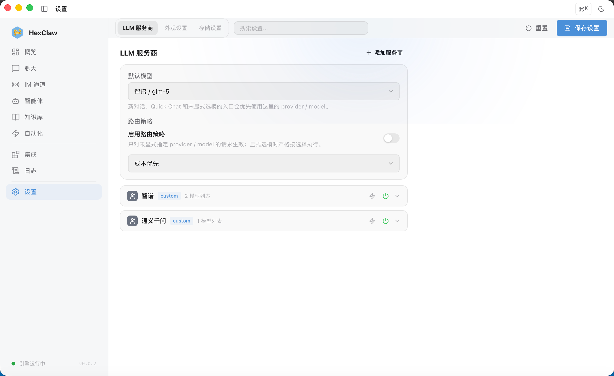

河蟹 AI 文档
模型服务商
配置多个 AI 服务商，管理 API Key 和模型。
支持的服务商
| 服务商 | 默认地址 | 代表模型 | Key 格式 |
|---|---|---|---|
| OpenAI | api.openai.com/v1 | GPT-4o、o 系列等 | sk-... |
| DeepSeek | api.deepseek.com/v1 | DeepSeek 系列 | sk-... |
| Anthropic | api.anthropic.com/v1 | Claude 系列 | sk-ant-... |
| Google Gemini | generativelanguage.googleapis.com | Gemini 系列 | AIza... |
| 阿里 Qwen | dashscope.aliyuncs.com | Qwen 系列 | sk-... |
| 字节 Ark | ark.cn-beijing.volces.com | 豆包 / Ark 可接入模型 | ep-... |
| Ollama | localhost:11434/v1 | Llama / Qwen / Mistral / DeepSeek | 无需 |
| 自定义 | 用户自定义 | 用户自定义 | 用户自定义 |
说明：上表中的模型名称仅作示例。实际可用模型列表以你的服务商账号权限、地区和 Provider 返回结果为准。
添加服务商
- 进入 设置 → 模型服务商
- 点击 "添加服务商"
- 选择类型（OpenAI / DeepSeek / ...）
- 填入 API Key（安全存储在 Tauri 本地密钥库中）
- （可选）修改 Base URL（适用于代理或私有部署）
- 保存

模型能力标识
每个模型标注了其支持的能力：
- text — 文本对话（所有模型）
- vision — 图片理解（GPT-4o、Claude、Gemini、Qwen-VL、豆包 Vision、LLaVA）
- video — 视频理解（Gemini 2.5/2.0）
- audio — 音频理解（Gemini 2.5/2.0）
- code — 代码生成（所有文本模型）
Ollama 本地部署
使用 Ollama 可以完全离线运行 AI 模型：
# 安装 Ollama
brew install ollama # macOS
# 或访问 ollama.com 下载
# 启动并下载模型
ollama serve
ollama pull llama3.1
ollama pull qwen2.5
ollama pull deepseek-r1在河蟹 AI 中添加 Ollama 服务商，Base URL 填 http://localhost:11434/v1，无需 API Key。
API Key 安全
安全：所有 API Key 通过 Tauri 的安全存储机制保存在操作系统密钥链中，不会以明文写入磁盘。
测试连接
每个 Provider 卡片上有 ⚡ 测试按钮，点击后会验证：
- 后端引擎是否运行
- API 配置是否可访问
测试结果会内联显示在 Provider 卡片上（绿色 ✓ 或红色 ✕）。
自动模型选择
模型下拉列表的第一个选项是 Auto（自动选择，故障切换）。选择后：
- 优先使用默认 Provider 的默认模型
- 如果请求失败，自动切换到下一个可用 Provider
- 适合需要高可用性的场景